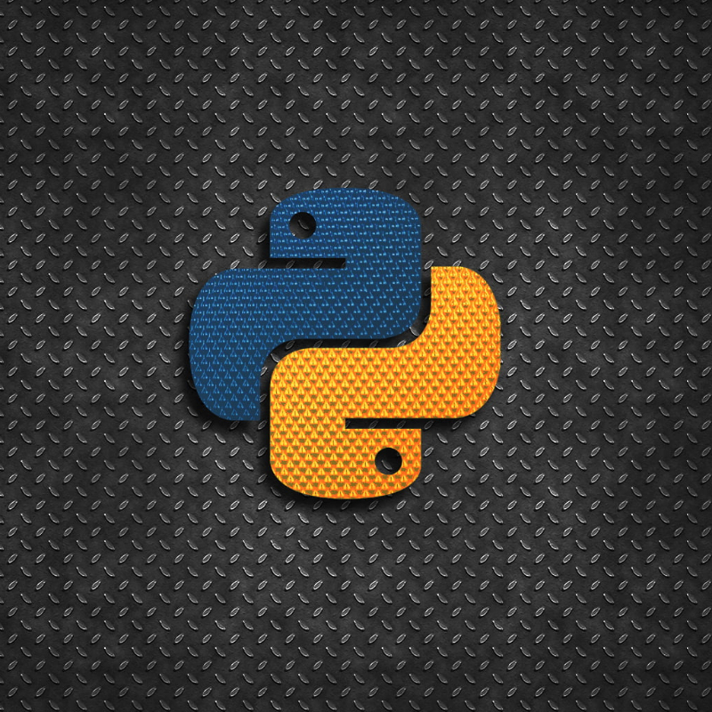

Made

Python
Python adalah bahasa pemrograman yang populer dan dapat digunakan untuk berbagai macam keperluan. di sini saya menggunakan framework untuk mengelola serversite dari web ini yaitu Flask
Flask adalah microframework Python yang didesain untuk membuat web applikasi.
Alpine.js
Alpine adalah library JavaScript minimalis yang dirancang untuk menambahkan interaktivitas sederhana pada aplikasi web tanpa memerlukan framework yang lebih besar seperti Vue atau React.